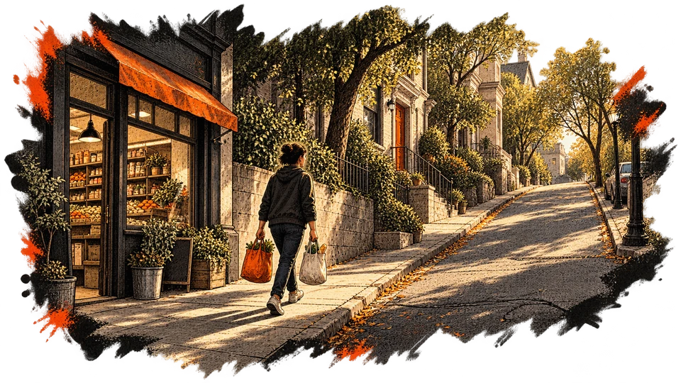
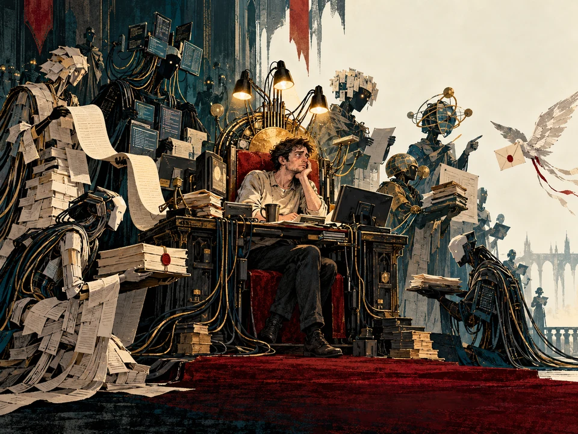

WORK 001 / ESSAY
What Happens When the Routine Breaks?
A plan that works on a good day may be useless on Tuesday. Movement, motivation, and what happens when the routines that carry us stop working.
Read the essay ↗USEFULWRONG / THE LIBRARY
Two complete English works. Each can be read without joining anything. The notes and sources belong to the essays, not to a separate hidden document.

WORK 001 / ESSAY
A plan that works on a good day may be useless on Tuesday. Movement, motivation, and what happens when the routines that carry us stop working.
Read the essay ↗
WORK 002 / ILLUSTRATED FICTION
A fairy tale about a ruler who delegates everything, including the work of checking what his assistants tell him.
Read the fairy tale ↗The next work will appear when there is a work to read. Until then, there are questions still being investigated.